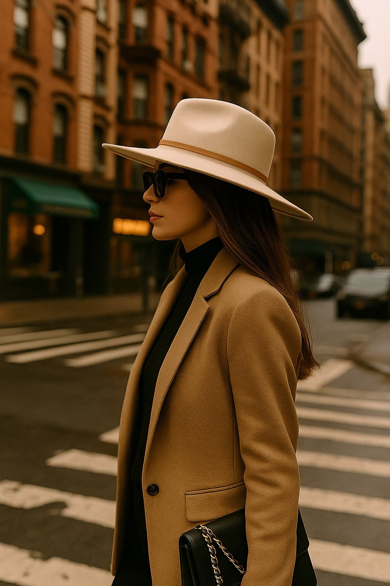

The 7 Most Effortlessly Cool Looks You’ll See in New York This Spring
If there's one place that defines "effortlessly cool" every spring, it's New York. Between spontaneous rooftop hangouts and stylish commutes through SoHo, the city blossoms—and so do the outfits. Here’s our guide to the 7 most naturally stylish looks spotted in NYC this season. No filters, no fuss, just the real deal.
1. The Trench-and-Kicks Combo

The timeless beige trench gets an urban twist when paired with crisp white sneakers. Whether you're rushing to a café meeting or walking the High Line, this look screams clean, confident, and classic.
2. Midi Skirt Magic with a Retro Tee
Pair a flowy midi with a vintage graphic tee, and suddenly you're that girl everyone turns to see twice. Add gold hoops, and you’ve nailed casual charm with flair.
3. The Denim-on-Denim Darling

Only New Yorkers can wear denim on denim and still look like they’re walking into a GQ editorial. Top it with a structured mini bag and sunglasses for that model-off-duty finish.
4. Minimalist Neutrals with Maximum Style

Think creamy beige pants, a light sweater, and soft accessories. This look is spring in its most sophisticated form. It’s less about making noise and more about owning the silence.
5. Oversized Blazer Over Everything

The boxy blazer isn’t going anywhere. Whether thrown over a slip dress or a wide-leg trouser, it’s bold, structured, and effortlessly cool. Don’t forget the boots—it’s NYC after all.
6. Bomber Jacket + Dress = Perfect Balance
A breezy dress under a slightly edgy bomber is peak transitional weather genius. Add a tote and a low bun, and you're the mood board.
7. Relaxed Wide Pants and a Cropped Top
There’s something effortlessly boss about wide-leg pants and a tiny top. The flow versus fit contrast just works. Add chunky sneakers, and you’ve mastered the cool-girl ratio.
Final Thoughts
Style in NYC is never about following rules—it’s about owning your lane. These 7 looks prove that sometimes, the coolest thing you can wear is confidence (and maybe a good pair of sunglasses). Spring is here—make it iconic.